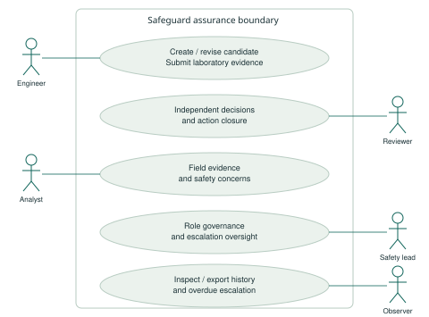
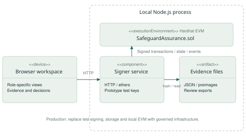
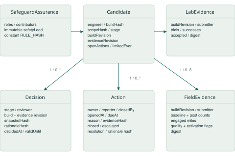
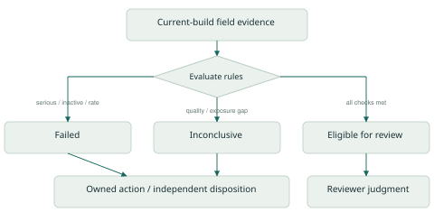
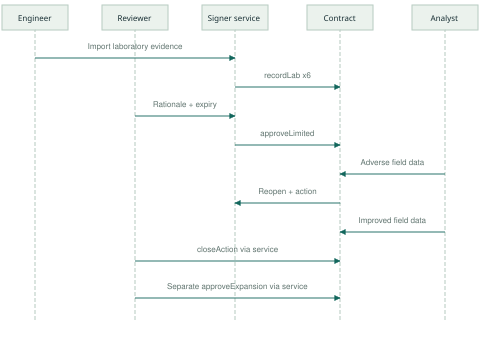
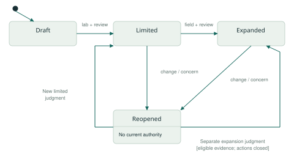

The GRC problem and the proposed solution
Safeguard is a working Solidity and Hardhat prototype for governing Autosteer safeguard changes. It connects a candidate software build, its vehicle configurations, validation evidence, independent release judgments and subsequent corrective actions in one inspectable decision trail.
Design basis
The supplied report identifies an assurance gap: distributing an OTA remedy does not establish that its safeguards are enabled, change driver behaviour or reduce risk. Its research question asks how evidence of foreseeable misuse should inform accountable release and corrective-action decisions. This implementation follows the core controls C2-C5 in section 4.2 and the workflow in sections 4.3-4.6 (PDF pages 14-18). It does not reconstruct Tesla's internal approval process.
| Control | GRC weakness addressed | Implemented mechanism |
|---|---|---|
| C2 / preventive | Missing, failed or wrong-version evidence can be overlooked. | Each configuration needs three scenario results. Incomplete or stale evidence blocks the gate. |
| C3 / governance | Delivery ownership can conflict with independent challenge. | Only an assigned reviewer can approve; candidate contributors remain ineligible even after a role change. |
| C4 / change control | Old approval can silently persist after a material change. | Evidence revisions revoke current authority. Build revisions also make earlier records stale; original decisions remain visible. |
| C5 / monitoring | Adverse findings may lack ownership or timely follow-up. | Failed or inconclusive field submissions open an engineer-owned action, due in seven days. Independent closure and a separate decision are required. |
How the technology changes the process
The rules execute in a smart contract rather than only in a dashboard. A transaction cannot create an affirmative release decision while required checks fail or actions remain open. Evidence hashes, transaction senders, revision numbers and decision events bind the judgment to a specific snapshot. This makes unsupported approvals harder to record and makes changed evidence consequential.
Users, decision rights and accountability
| User | Responsibility | Prototype permission |
|---|---|---|
| Engineering / validation owner | Own the build and scope; submit scenario evidence; investigate assigned actions. | Engineer: candidate creation, laboratory records and build revisions. |
| Independent safety reviewer / release authority | Challenge evidence, assess residual uncertainty and explain release or closure judgments. | Reviewer: limited and expansion decisions; independent action closure. |
| Field safety analyst | Validate comparison cohorts and exposure, attest field summaries and raise concerns. | Analyst: field records and protected concern reporting. |
| Executive safety lead | Appoint qualified reviewers, govern roles and respond to escalations. | SafetyLead: role administration and concern reporting. Test-clock control is a service feature. |
| Internal audit / compliance / regulator | Inspect the evidence trail; assess process adherence or receive reviewed packages. | Observer: read and export. No regulator approval role is required. |
The design follows the report's Three Lines distinction: engineering retains operational ownership; safety and compliance provide challenge; internal audit assesses process effectiveness. The prototype combines qualified safety review and release authority into one reviewer role. A production organisation could require two separate approvals. Drivers, passengers and other road users are beneficiaries rather than routine system operators.
Role interactions and protected decision rights

The user interface now presents a focused workspace for each responsibility. Engineers see laboratory submissions and build changes; analysts see field evidence and concern reporting; reviewers see evidence inspection, decisions and independent closure; safety leads see overdue follow-up; auditors see the full read-only history and export. Shared candidate context and summary gates keep the participants aligned.
Architecture and the blockchain decision

| Layer | Implementation and purpose |
|---|---|
| Browser workspace | Local HTML, CSS and JavaScript show required coverage, explained gates, actions and event history. No external assets or browser wallet are required. |
| Local signer service | A loopback-only Node.js service validates JSON, selects prototype test signers and submits ethers transactions. It serialises requests and exports review packages. |
| Smart contract | Solidity enforces roles, versioned evidence gates, contributor separation, expiring decisions and corrective-action state. Optimised runtime bytecode is below the EVM deployment size limit. |
| Off-chain evidence | Synthetic JSON and canonical preimages make the prototype reproducible. Real studies, telemetry, rationale documents and build artifacts would remain in an access-controlled evidence repository. |
Why blockchain is useful, and when it is not necessary
A shared ledger could give engineering, independent safety assurance and external assessors a common ordering of evidence and decisions without relying on one team's editable spreadsheet. A production option is a permissioned EVM network with validators governed by genuinely separate parties. Read permissions, validator membership and independent operation would need explicit agreement; this prototype does not implement those network controls.
A signed, append-only database may suffice when one trusted operator controls the workflow. Blockchain adds value when independent parties share governance and verify the record. The resettable local Hardhat chain demonstrates contract behaviour, not durable multi-party immutability.
Data model, evidence integrity and history

A candidate fixes its configuration list and three required scenarios before evidence is submitted: driver attention, mode confusion and operating boundary. Changing the configuration scope requires a new candidate. Each laboratory or field record identifies the candidate's current build revision, submitting address and a non-zero content digest. Decisions are append-only records; current evidence mappings are supplemented by events containing every superseded input.
The evidence digest is Keccak-256 of a UTF-8 JSON record serialised in the fixed field order defined by canonicalEvidence. The payload includes schema, synthetic-data flag, kind, build label, configuration, scenario or field measurements, quality declarations and source identifier. The service retains that canonical string in the review package, so changing a result or its source changes the fingerprint.
A decision snapshot separately binds chain ID, contract address, candidate ID, build and scope hashes, build revision, evidence revision, ordered configurations and RULE_HASH using Solidity abi.encode. The rationale hash and validity window are stored with the reviewing address. Every evidence mutation changes the revision; the resulting current snapshot no longer matches an older approval.
Review rules and explicit uncertainty
| Rule | Implemented interpretation |
|---|---|
| Laboratory gate | Every required scenario/configuration needs current-build evidence, an accepted-quality declaration, at least 30 trials and at least 95% successful responses. Exact integer cross multiplication avoids rounding the success percentage. |
| Field gate | Each configuration needs current-build evidence, complete and comparable cohorts, enabled safeguards, no serious-event flag, at least 1,000 engaged miles in each cohort, and no increase in event rate. |
| Failure priority | A serious-event flag or inactive safeguard fails immediately, even when exposure or comparability is poor. Otherwise poor quality, low exposure or incomparable cohorts remain inconclusive. |
| Decision gate | An assigned independent reviewer, non-zero rationale hash, no open actions and all required checks are necessary. Decisions expire within at most 30 days. |
| Uncertainty states | Missing means no required record; stale means an old build revision; inconclusive means insufficient quality or exposure; failed means a violated rule. Eligible means available for reviewer assessment. |

Event rate per 1,000 engaged miles = events / engaged miles x 1,000. The contract compares postEvents x baselineMiles against baselineEvents x postMiles using uint256 arithmetic. This avoids division, zero-denominator ambiguity after exposure checks, and loss of small rate differences through rounding.
A complete evidence-to-decision cycle

The synthetic candidate covers HW3-enabled and HW4-enabled configurations. The engineer supplies six laboratory results, each with 39 successful responses out of 40 trials. The reviewer inspects the records, supplies a rationale and authorises limited deployment for a defined period. Installation counts alone are not an effectiveness input.
The analyst then submits the report's adverse example: baseline 8 events / 4,000 miles = 2.0 per 1,000 miles; post-update 12 / 4,000 = 3.0. Recording this result invalidates current authority and creates an action owned by the candidate's engineer with a seven-day deadline. Expansion cannot be approved while the concern remains open.
After the deadline, any participant may send an escalation transaction addressed to the safety lead in the event record. Improved comparable evidence can subsequently satisfy the field gate, but cannot close the action. An independent reviewer records resolution evidence and a closure rationale; a separate expansion decision then establishes authority for the new snapshot.
Lifecycle, invalidation and release enforcement

Every laboratory or field evidence write after a decision moves the stored stage to Reopened, including an improved result. This conservative rule requires renewed assessment whenever the decision basis changes. It is stricter than reopening only on adverse data. Closing an action likewise leaves release authority unavailable until another decision is recorded.
A build revision increments buildRevision, invalidates earlier laboratory and field evidence, and resets the current build's prior-limited-decision flag. Reusing an old build hash does not revive evidence from an earlier revision. The revised build must obtain a new limited decision before its field results can be submitted.
Decision expiry or revocation of the reviewing address's role removes effective authorisation without rewriting historical stage labels. A displayed Limited or Expanded stage alone is therefore insufficient. isDeploymentAuthorized checks the latest decision, current revisions, open actions, reviewer role, requested stage and validity window.
Production release integration
An OTA release service would resolve the approved contract address and candidate ID, verify the actual artifact hash and configuration scope, then query authorisation for the intended deployment stage at an appropriately finalised block. It should fail closed on a missing or expired decision and recheck before distributing an artifact. Protect the release service from bypass and record its execution separately. This integration is proposed; it is not part of the local prototype.
Validation, limitations and an adoption path
Observed validation on 3 November 2026: 56 tests passed (48 Solidity tests and 8 Mocha tests), including 51 new assurance tests and 5 retained starter tests. The new contract includes a 256-run fuzz test for exact rate comparison. Build and TypeScript checks passed. A browser walkthrough exercised evidence submission, rejected self-approval, limited approval, adverse monitoring, overdue escalation, independent closure and expansion. These are software workflow results, not a user study or a vehicle safety outcome.
| Risk / limitation | Required operational response |
|---|---|
| Untruthful or selective evidence | Use trusted connectors, signed source provenance, coverage audits and independent validation. Preserve contrary findings and study limitations. |
| Identity and key custody | Replace role selection and server-held test keys with authenticated identities, personal signing or managed custody. Use organisational separation and protected escalation. |
| Admin or reviewer compromise | The immutable safety lead controls role assignments; there is no admin transfer function. Production governance needs recovery design, suitable multisignature administration and external review. |
| Privacy and availability | Node-readable hashes and summaries are not confidential. Keep personal records and cabin footage off-chain under encryption, access controls and retention rules; maintain recoverable preimages. |
| Chain or service outage | Define equivalent controlled review and reconciliation procedures. Never treat integration failure as evidence eligibility. |
| Scale and cost | Bounded scope keeps release checks finite. Production needs event indexing, lifecycle retention, storage-cost analysis and finality policies. |
Measure process improvement before expanding
Pilot one safeguard family. Compare missed evidence gaps, unsupported approvals, decision-reconstruction time, overdue critical actions and signal-to-qualified-triage time against a document-based baseline. Record reviewer workload, false alerts and integration effort. Do not infer reduced crashes, financial returns or effectiveness from a successful workflow demonstration.
References and implementation basis
Primary problem source: supplied IS4234 Project report, sections 3-4, especially Table 5 and Table 7 (PDF pages 14-18). Its historical scope and distinctions between documented facts and proposed controls are retained. Technical references: Hardhat 3 documentation at https://hardhat.org/llms.txt; Solidity Security Considerations at https://docs.soliditylang.org/en/latest/security-considerations.html; ethers v6 hashing documentation at https://docs.ethers.org/v6/api/hashing/.
Implementation differences from the report's browser-only proposal: enforce consequential rules in Solidity; use actual local signed transactions; store only hashes and necessary summaries on-chain; add expiring decisions and persistent contributor conflicts. No vehicle connector, public hosted service, legal filing workflow, recall reconciliation or real-world participant evaluation is claimed.